遊びで植物を育てよう
2024/10/13
金木犀の花が日差しに当たって輝いてました。
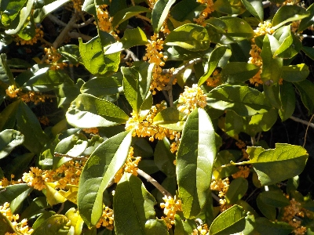
匂いもいいですが、花もキレイです。
金木犀はいいな。
【キンモクセイTOP】
【木TOP】
【園芸TOP】
2024/09/27
金木犀の挿し木を鉢上げしました。
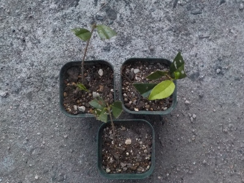
葉っぱが残っている枝が沢山あったので沢山挿し木が成功したと思ったんですが、根っこが出てるのは3本だけでした。
3本鉢上げして、残りはペットボトルに戻しました。
【キンモクセイTOP】
【木TOP】
【園芸TOP】
2024/07/17
金木犀の挿木が発根していました。
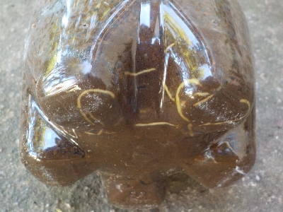
ペットボトルの底から金木犀の根っこが見えてます。
しっかりとした太い根っこがありますね。あと1月くらい経ったら鉢上げしようと思っています。
【キンモクセイTOP】
【木TOP】
【園芸TOP】
2024/06/18
金木犀の挿木をペットボトルでしました。
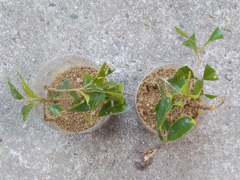
今現在挿木で育っている金木犀は1本だけです。枯れることを考慮して10本くらい挿木しました。
枯れないで大きく成長するのが一番いいんですが、なぜか枯れちゃうんですよね。
【キンモクセイTOP】
【木TOP】
【園芸TOP】
2023/10/15
6月に挿し木したキンモクセイ。
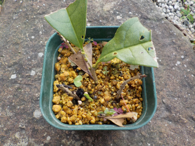
１本だけ葉っぱが残っています。多分根っこが生えているでしょう。
新芽がないので成長するのか不安です。
【キンモクセイTOP】
【木TOP】
【園芸TOP】
2023/06/25
ペットボトルから出したキンモクセイは1本しか生きていません。
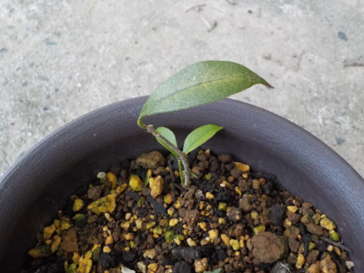
1本だけになりました。小さい苗を育てるのは難しいです。
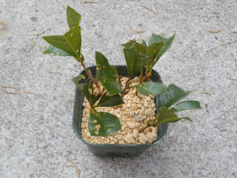
1本ではものたりないので、普通に挿し木しました。挿し木シーズンなのでうまくいって欲しいです。
【キンモクセイTOP】
【木TOP】
【園芸TOP】
2023/05/18
キンモクセイの挿し木をペットボトルから出しました。
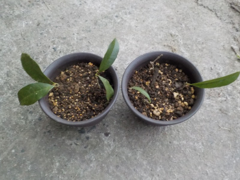
去年の11月に挿し木したキンモクセイです。
根っこは見えなかったですが半年くらい経っても葉っぱがあるので、たぶん小さな根っこが出ているでしょう。
でも枯れる可能性が高そうなので1鉢に2本づつ植えました。
【キンモクセイTOP】
【木TOP】
【園芸TOP】
2023/04/22
気が付いたらキンモクセイに葉っぱがありませんでした。
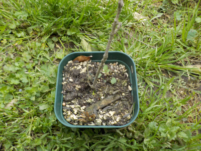
2021年に挿し木したキンモクセイです。ちょっと前までは葉っぱが何枚があったんですが、今日見たら全部なくなっていました。
枯れたかな？どうしてでしょう？
出来たら復活して欲しい。
【キンモクセイTOP】
【木TOP】
【園芸TOP】
2022/11/13
ペットボトルを使ってキンモクセイを挿し木しました。

11月なので普通に挿し木したら寒さで枯れるかなと思い、ペットボトルで密閉挿しをしました。
温室っぽくなるので、きっとキンモクセイは快適でしょう。
根っこが出るのを期待してます。
【キンモクセイTOP】
【木TOP】
【園芸TOP】
2022/10/16
金木犀がいい匂いでした。
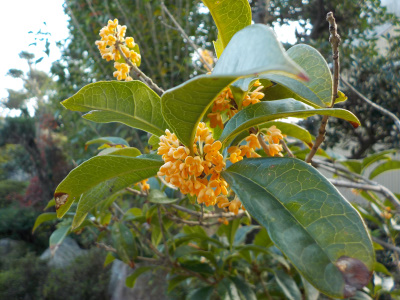
今シーズンは2度咲きがありました。キンモクセイの匂いはいいですね。
来月になったら挿し木をまたやろうと思っています。
【キンモクセイTOP】 【木TOP】 【園芸TOP】
2022/06/11
キンモクセイの挿し木がうまくいかないです。
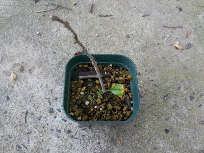
今現在キンモクセイで生き残ったのはこの1本だけです。
この1本も葉っぱ1枚だけなので、枯れてしまうかもしれません。
なんで枯れたんだろう？
【キンモクセイTOP】 【木TOP】 【園芸TOP】
2021/10/31
キンモクセイが絶好調です。
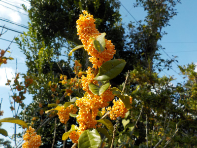
小さい花が沢山咲いてました。
今がピークですね。
【キンモクセイTOP】 【木TOP】 【園芸TOP】
2021/10/23
キンモクセイの花がいい匂いです。
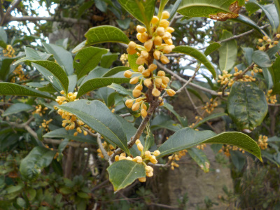
今日は庭に出るとキンモクセイの花の匂いがしていました。
今年は花が多いです。
【キンモクセイTOP】 【木TOP】 【園芸TOP】
2021/09/19
キンモクセイの挿し木を鉢上げしました。
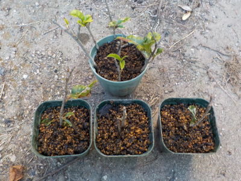
ペットボトルの底から根っこが確認出来たので鉢上げしました。
根っこが出た3本を鉢上げしました。
根っこが出なかったけど葉っぱがまだ残っているものは、再び挿し木しました。
前回は枯らしてしまったので、注意しながら育てようと思います。
【キンモクセイTOP】 【木TOP】 【園芸TOP】
2021/07/03
キンモクセイの挿し木をしました。
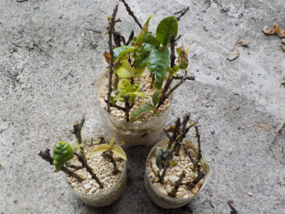
キンモクセイの挿し木に失敗したので、再挑戦です。
葉っぱが付いていない枝があったりして状態は悪いですが、数が多いのでなんとかなるんじゃないかと思っています。
【キンモクセイTOP】 【木TOP】 【園芸TOP】
2021/05/15
去年挿木したキンモクセイは全滅でした。
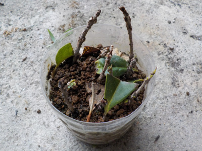
キンモクセイの挿し木は簡単なんて思っていましたが、失敗してしまいました。
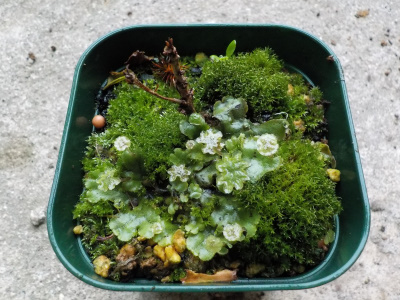
一昨年挿木したキンモクセイは枯れてしまいました。
また一からやり直しします。
【キンモクセイTOP】 【木TOP】 【園芸TOP】
2020/08/16
去年のキンモクセイはあまり育たなかったので、今年も挿し木しました。
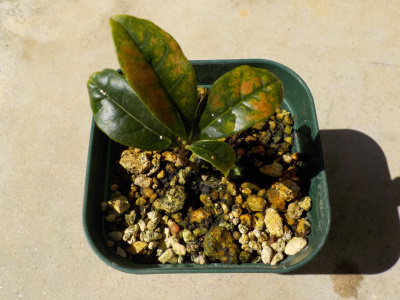
去年挿し木したキンモクセイです。まだ小さいです。
挿し木は4本成功しましたが、秋冬の管理に失敗したようで生き残ったのはこの１本だけです。
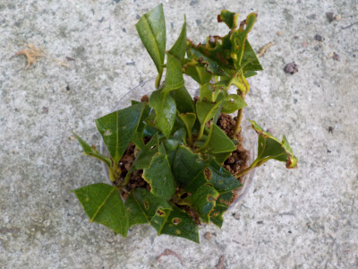
1本じゃ寂しいので、追加で挿し木しました。
小さいペットボトルにギュウギュウに詰め込みました。
今回は春までペットボトルに入れたままにしようかな。
【キンモクセイTOP】 【木TOP】 【園芸TOP】
2020/03/08
キンモクセイをポットからプラ鉢に移しました。

ポットからちょっと大きいプラ鉢に植え替えしました。
もうちょっとしたら葉っぱが出るかな。
【キンモクセイTOP】 【木TOP】 【園芸TOP】
2019/09/28
キンモクセイの挿し木はペットボトルで簡単に出来ます。
ペットボトルで密封されてるから水やりいらずの簡単挿し木です。
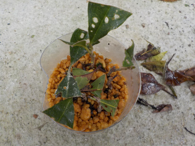
虫食いの葉っぱも枯れずに残りました。
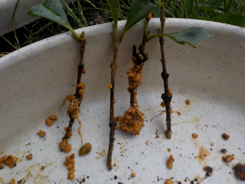
4本ちゃんと根っこも出ています。
キンモクセイの挿し木って初めてしたんですが、どれくらいで花が咲くでしょうね。
【キンモクセイTOP】 【木TOP】 【園芸TOP】
2019/06/30
ペットボトルで金木犀の挿し木。
水やり軽減で挿し木です。
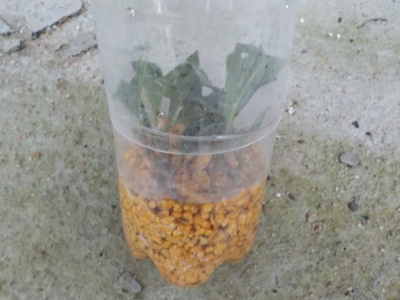
何本成功するかな。
【キンモクセイTOP】
【木TOP】
【園芸TOP】
畑仕事じゃないよ。
【おいしいものを食べよう。】【しっかり寝よう。】
【ソロ活をしよう!】【季節感のあることをしよう。】【動画視聴はほどほどに。】【当サイトの全てのコンテンツは無断転載禁止です。】